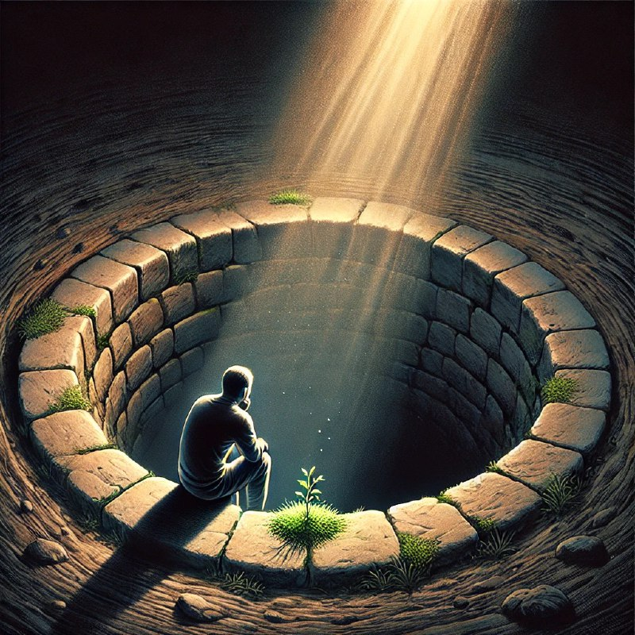

Ҳар бир қоронғуликдан сўнг нур бор

Кеча бир дўстим мендан савол берди:
— Агар одам ўзини руҳий бўшлиқда ҳис қилаётган бўлса, унга қандай маслаҳат берар эдинг?
Мен бироз ўйлаб жавоб бердим:
— Ушбу ҳолатни тўлиқ ҳис қилиб яшашда давом этсин. Ҳеч қаерга шошилмасин, ҳеч нарсани мажбур қилмасин. Ўзини йиғма, ўзини босма. Бир кун келиб, куч тўплаб, кичик бир қадам ташлашга шай бўлганини сезади.
Дўстим бир муддат жим қолди. Балки у ҳам худди шундай ҳолатни бошдан кечираётгандир. Мен эса қўшимча қилдим:
— Инсон ўзини бахтсиз ҳис қилаётганида, унинг мажбурий равишда ўзини бахтли бўлишга уринтириши фойдасиз. Бу нафақат фойдасиз, балки зарарли ҳам бўлиши мумкин. Одамларга қулоқ солиб, “ўзингни йиғ” ёки “вақт ўтказма, ишла!” каби маслаҳатларга амал қилишга ҳаракат қилишдан кўра, ўша ҳолатни ўзининг бир қисми сифатида қабул қилиш яхшироқдир.
Мен унинг кўзларига қараб, энг муҳими ҳақида гапира бошладим:
— Энг хатарли нарса бу ўзингизни бошқалар билан таққослашдир. “Мен унингдек кучли эмасман”, “Нега улар муваффақиятли, мен эса йўқ?” деб ўйлашни тўхтат. Ҳар бир инсоннинг ўз ҳаёт тезлиги бор.
Суҳбат охирида дўстим бир оз енгил тортгандек бўлди. Унга шундай дедим:
— Ҳатто энг чуқур “туби йўқ” кўринган жойда ҳам қоронғулик абадий эмас. Сабр қилсанг, бир кун келиб, уйғониб, кўнглингда озгина ёруғлик сезасан. Ана ўшанда нур таралиб, сенга яна бир навбатдаги имконият пайдо бўлади.
Инсон ҳаётида руҳий бўшлиқ, қоронғу кунлар бўлиб туради. Бу ҳолатни тан олиш ва уни тўлиқ ҳис қилиш зарур. Шошилмасдан, ўзингизга озгина вақт беринг. Ҳаёт бу давом этадиган жараён, ва ҳар қандай тундан кейин, албатта, кун чиқади. Ҳар бир қоронғуликнинг ўзига хос бир нури бор — у сиз учун кичик умид учқуни бўлиши табиий.